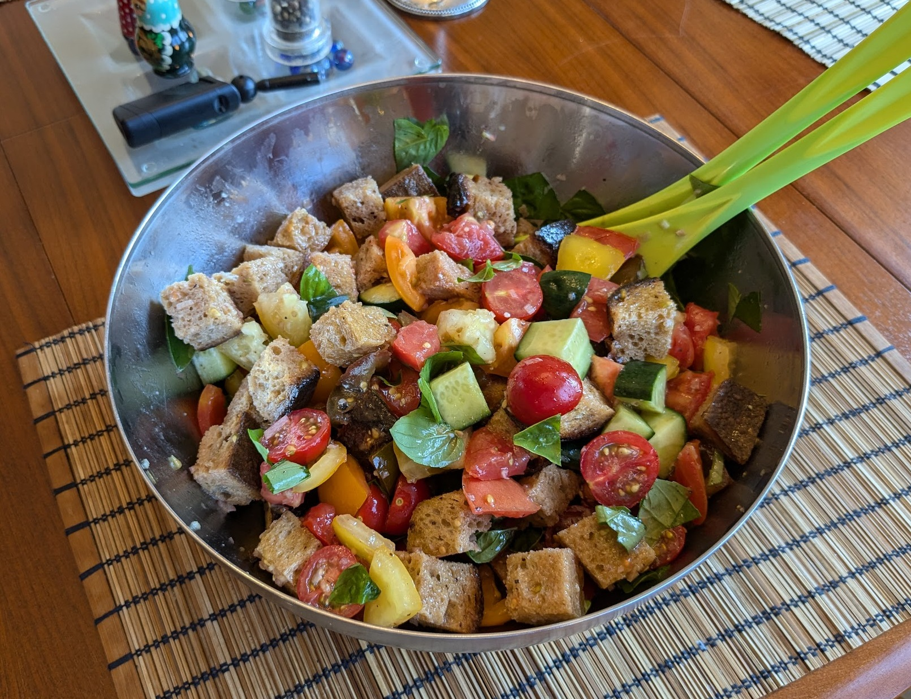

Panzanella classique

Pour 4 personnes :
- 1,2kg de tomates bien mûres, si possible de variétés différentes
- 350g de pain au levain, idéalement un peu rustique
- (Facultatif) Un concombre
- Une échalote ou un petit oignon rouge
- Deux gousses d'ail
- Une cuillère à café de moutarde
- Deux cuillères à soupe de vinaigre (blanc, rouge, ou un mélange des deux)
- Un bouquet de basilic frais
- Sel, poivre, pas mal de bonne huile d'olive
- Laver et couper les tomates en morceaux de la taille d'une phalange de pouce. Les saler, les mélanger, et les mettre dans une passoire au-dessus d'un bol pour qu'elles rendent un peu de jus.
- Pendant ce temps, faire préchauffer le four à 180°C. Couper le pain en cubes de taille similaire aux tomates (ou un peu plus gros), les mélanger avec deux cuillères à soupe d'huile d'olive, et enfourner 10-15 minutes, jusqu'à ce qu'ils deviennent fermes (mais avant qu'ils commencent à trop changer de couleur).
- Pendant ce temps, si on en a, éplucher, épépiner et couper le concombre en dés légèrement plus petits que les cubes de pain. Laver le basilic, récupérer les feuilles, et couper les plus grosses en quelques morceaux.
- Éplucher et écraser l'ail, éplucher et émincer l'échalote, et mettre le tout au fond d'un gros saladier avec la moutarde, le vinaigre, et le jus des tomates. Mélanger au fouet, et ajouter 120mL d'huile d'olive progressivement pour que ça prenne une couleur uniforme.
- Ajouter le pain, les tomates, le concombre et le basilic dans le saladier. Poivrer, bien mélanger, goûter et ajouter un peu de sel et poivre si besoin. On peut déguster immédiatement, mais c'est meilleur si on attend 20-30 minutes en mélangeant de temps en temps.
Remarque : si on n'est pas sûr que tout va être mangé, c'est une bonne idée de réserver le pain à part (dans un sac en papier, en dehors du frigo). Sinon, le pain devient tout mou et c'est moins chouette.